0x00 基本信息
作者: o1hy@DAS
原文作者： Amine Boukhtouta, Djedjiga Mouheb , Mourad Debbabi ,Omar Alfandi, Farkhund Iqbal, May El Barachi
原文标题： Graph-theoretic characterization of cyber-threat infrastructures
原文会议或期刊： Digital Investigation(网络中与犯罪和安全有关的主题)
论文主要内容： 与网络威胁相关的基础设施的分析
0x01 文章摘要
本文对网络威胁及其基础设施进行了研究。
检测和分析网络威胁基础设施，揭示关键参与者(所有者、域、ip、组织、恶意软件家族等)以及这些参与者之间的关系。
对这些基础设施共享进行量化，以揭示特定攻击背后的潜在群体。
研究了网络威胁基础设施的演变，以推断网络犯罪活动的模式。
0x02 背景
提出要解决的问题
网络威胁基础设施的要素（域名/IP，域名反查到的组织/注册商等信息） 及 其相互关系是什么
网络罪犯用于实施攻击的基础设施是什么
对于注册恶意域和IP地址的联系人而言，组织和人员中最重要的参与者是谁
这些恶意软件的基础设施的发展模式
基于上述的这些问题，本文提出的解决思路为：关联分析不同来源的恶意软件的基础要素，包括域名/IP，域名反查到的组织/注册商等信息。运用图论概念进行分析。
0x03 解决方法
整体流程: (1)数据收集、(2)网络威胁图生成、(3)统计特征、(4)图概念下的评分、(5)推断基础设施的演变模式
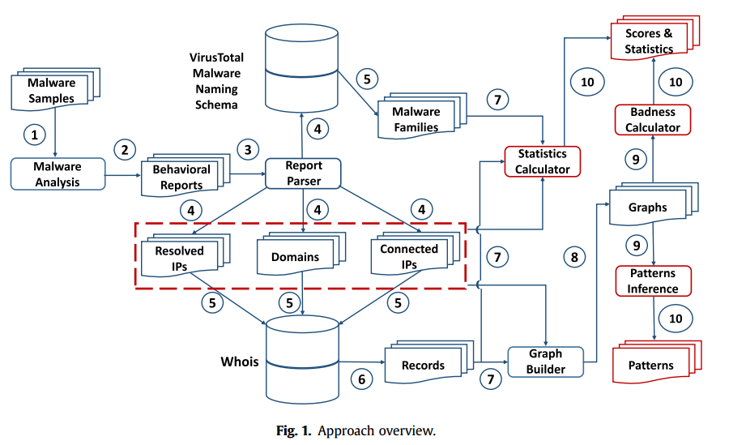
数据收集
数据来源： https://www.threattrack.com/
收集过程：
- 通过沙箱获得报告
- 获得这些被访问的域名，连接的IP
- 通过VirusTotal获得恶意软件家族信息
- 使用Whois获得 域名和IP的相关信息，如：注册人，组织，物理地址等
生成威胁图
威胁图的组件
malware, domains, IP addresses, FTP servers, SMTP servers, IRC channels, timestamps, organizations, registrars, technical people,administrative people and domain owners
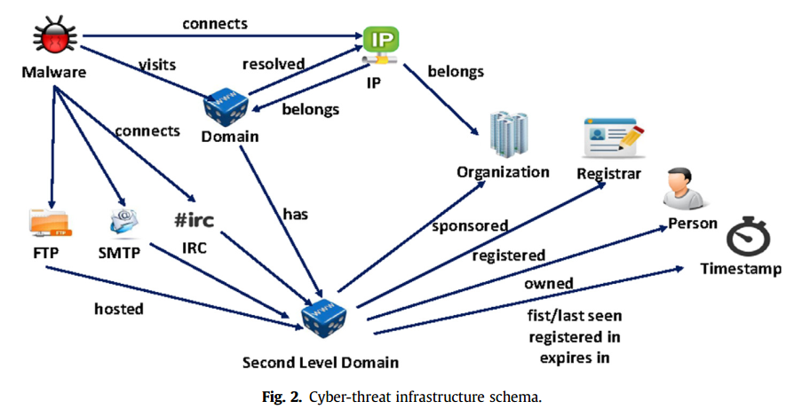
生成有向图
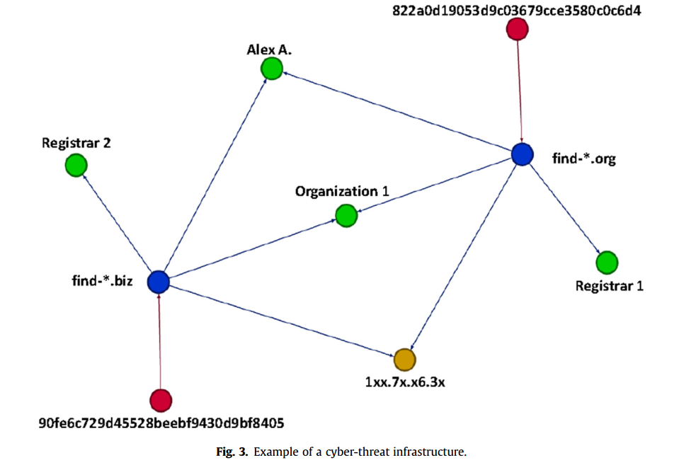
红色顶点代表恶意软件，黄色顶点代表IP，绿色顶点代表注册商等信息。
随着时间增长，这个图会超级复杂。
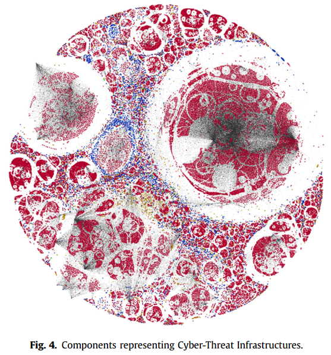
他提出如下概念，将异构有向图分析额为同构的有向图。
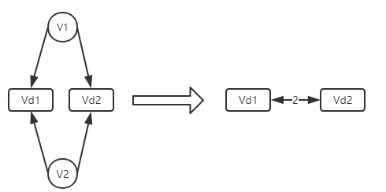
被恶意软件共享的域名相连接。假设有两个恶意软件 v_1 和 v_2 他们都连到了2个域名下：v_d1 和 v_d2。那么就把 v_d1和v_d2相连。
图分解会产生如下的几个子图：
- Domain-Malware graph：被恶意软件共享的域名被链接
- Domain-IP graph： 相同IP的域名
- IP-Malware graph： 被恶意软件连接的IP 链接起来
- Owner-Malware graph： 被恶意软件访问到的域名的拥有者被链接
- Owner-Physical address graph： 它们用相同的物理地址注册不同的域名的拥有者被链接
- Organization-Malware graph： 被恶意软件访问的IP的组织
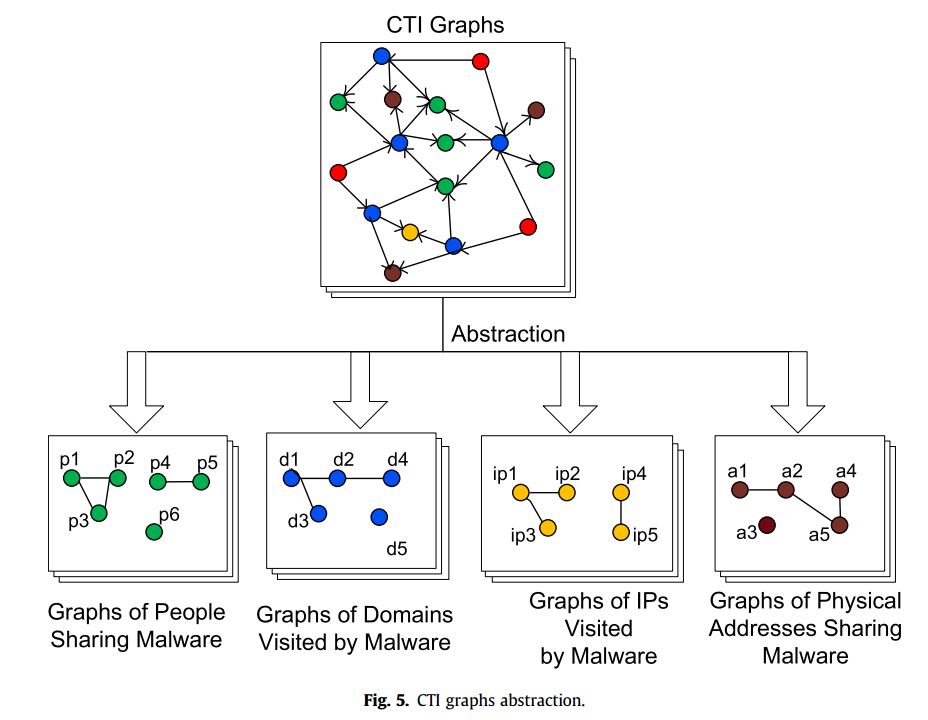
图概念下的评分
本文为了评估不同参与者在网络威胁基础设施中的重要性或影响，结合一些原因，最终选择了page rank算法。
$$
PR(v_i) =d[\sum_{v_j\in I(v_i)}\frac{PR(v_j)}{deg_{out}(v_i)}]+(1-d)\frac{1}{|d|}
$$
其中 I(v_i) 是顶点集。deg_{out}(v_i)是顶点的外度中心。d是阻尼因子，（经常被假定为0.85）。
他会对这个式子做一些变化……求值。
原因
page rank反映了模型演化过程中的随机性。因为随着时间的变化，基础设施也是在变的。page rank是用来描述用户浏览网页的算法。而一个恶意软件访问那些基础设施（域名、IP）等，这2中情况很相似。This algorithm has been developed intuitively considering a user surfing the Web, starting from a web page and randomly visiting another web page through a link. If the user is on page vj with a probability d (damping factor), then the probability for this user to visit another page vi is equal to 1/deg_{out}(v_j). With a probability of 1-d, the user will stop following links and pick another random page in V.
模式识别
目的
本文提出的解决的问题中有一个为：判断恶意软件的基础设施的发展模式。本文在此部分研究了：网络威胁基础设施如何随时间演变。
通过分离生成的图中可见的模式来识别这些基础设施中可识别的规则和不规则性。
为了推断图形，我们计算每天收集的图形之间的相似性。
计算关联性
为了计算图之间的关联性，它使用的方法为：graph kernels 。graph kernels 是使用线性方法计算图之间相似性的函数。然而，对于大型图来说，图核方法生成的向量具有高维，不容易处理。为了解决这个问题，图形核方法需要一个重要的过程称为计算图的指纹。
指纹生成的过程包括三步：1. 分解 2. 生成向量 3. 计算指纹
通过指纹计算关联性
基于时间的模式推断
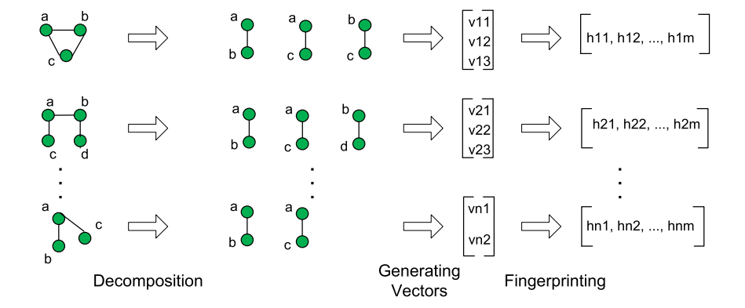
Generating Vectors
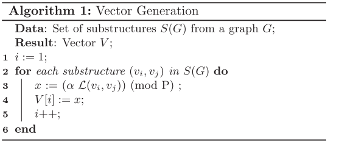
本质：把每一个分解后的子图变成一个整数。看第三行。
其中的α是随机数，P是一个大质数，L(v_i,v_j)，返回的是共享了v_i和v_j的恶意软件数量。
L is the labelling function that returns the number of malware shared between vi and vj
计算指纹
由图子结构生成的向量对于大型图可能具有高维性。为了减小矢量的维数，我们使用指纹技术来生成易于处理的紧凑表示。
不是很了解h函数返回的是什么。
Teixeira CHC, Silva A, Meira Jr W. Min-hash fingerprints for graph kernels: a trade-off among accuracy, efficiency, and compression. JIDM 2012;3(3): 227e42. https://seer.lcc.ufmg.br/index.php/jidm/article/view/199.
通过指纹计算关联性
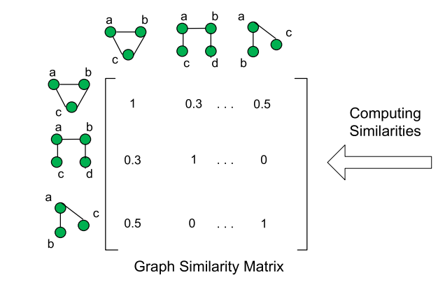
计算方式：指纹中相同的个数/总数
Graph similarities are represented through a matrix, where each value is proportional to the number of values, in the min-hash vectors, that are shared between graph pairs (Fig. 6). This matrix is important for grouping graphs with proportional similarities into groups that can be good candidates to detect patterns between corresponding minhash values.
基于时间的模式推断
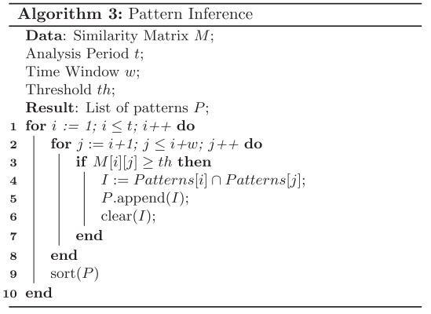
得到的模式
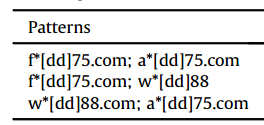
0x04实验结果
实验结果分为了三部分，分别是统计特征，badness scores排序，模式推断
隐私保护
For domain names, we remove some characters at the beginning or at the middle of domain names and replace them with “ ”character. For IP addresses, we replace some digits with “x” character. Regarding organizations, for each country, we replace organization names with indexed codes; for example, ORG1(CHINA)-GD represents an organization which has a network located in China, Guangdong city. For owners, we replace names with initials. For physical addresses, we mask some digits and letters with “ ” character.
数据集
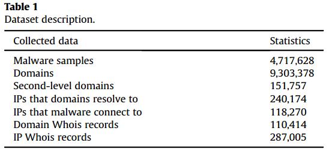
域名做了过滤，没有包含Alexa中前100W的名单
统计特征
Domains & resolving IPs
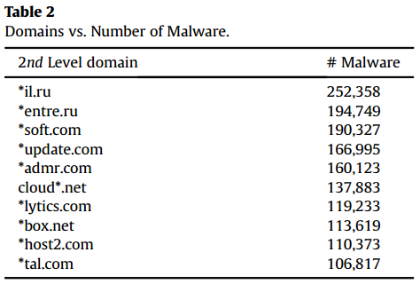
top10个经常被恶意软件访问的域名。其中有5个合法的.
原因：恶意软件样本倾向于通过访问合法的域或将对合法域的访问重定向到虚假网页来测试连接；
恶意软件还连接到合法的域，下载操作系统或软件的漏洞补丁，利用漏洞进行恶意活动。
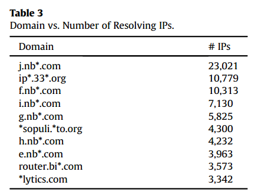
top-10 fast-fluxing domains(可以解析成多个IP的域名)
分析
大部分具有相同的二级域名 nb**,恶意软件广泛使用fast-flux和动态生成的域名
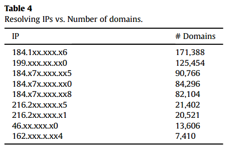
域名被解析后分布最多的ip空间
分析
表中可以看出184和216两个空间是最多的：
公共IP空间的存在暗示着网络罪犯很容易使用IP基础设施进行恶意活动，或者感染脆弱的IP空间，让他们成为僵尸网络的一部分
通过关联分析发现 解析为184.1xx.xxx.x6的域名为动态生成的域，都有于同一个二级域名 *eker.com
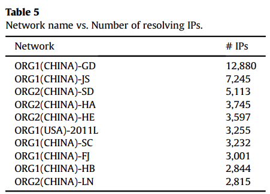
拥有这些IP的组织。
Connected IPs
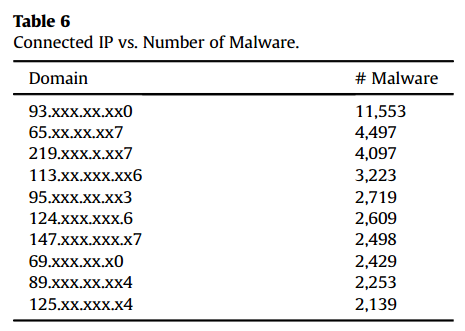
top-10 恶意软件链接的IP。
分析这些IP来自不同的IP空间经常和VPN有联系。
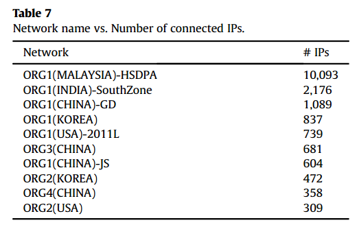
IP对应的top10的 network name。
分析 10个中8个为亚洲的。其中9个属于组织，3个是中国的，2个韩国，2个美国。排名第一是马来西亚的。
Whois information
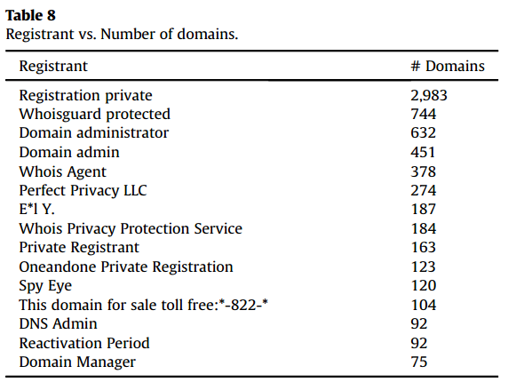
注册商与域名的对应信息。
分析可以发现，大部分都是那种隐私保护的注册商。
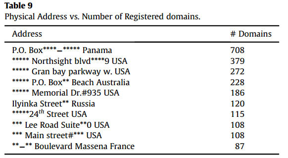
域名和物理地址的对应。
分析排名第一的是一个巴拿马的地址，这个地址会提供一些隐私保护的服务。
Badness ranking
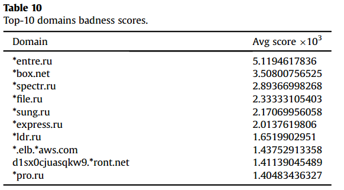
top10-域名的badness scores。
分析7个有 .ru，这7个中，5个有相同注册信息，关联了830个恶意软件，许多恶意软件家族都和这些域名有联系。
top10-链接ip的badness scores
分析
- 排名第一的与table6中的相同，同时2个表还有一些其他相同的IP。
- 其中存在一个组播IP，
239.255.255.250,windows服务中存在一个漏洞，可以让这些恶意软件通过SSDP协议作为感染载体。
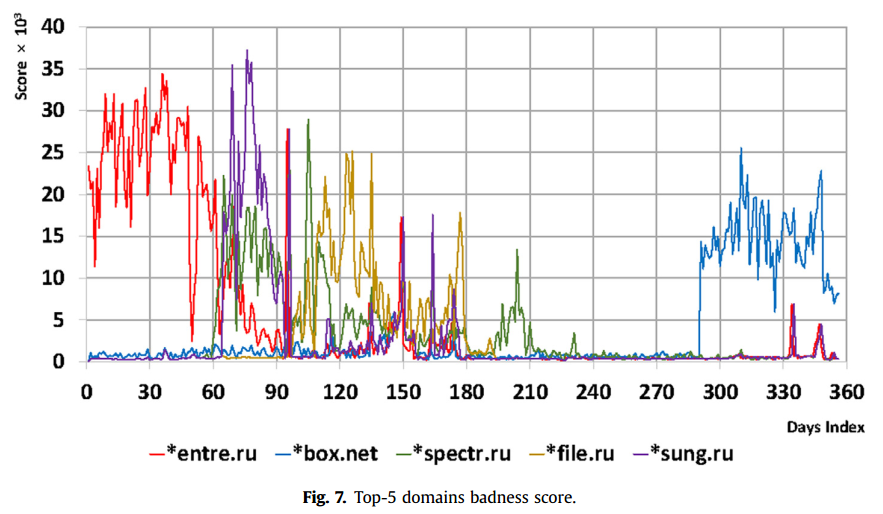
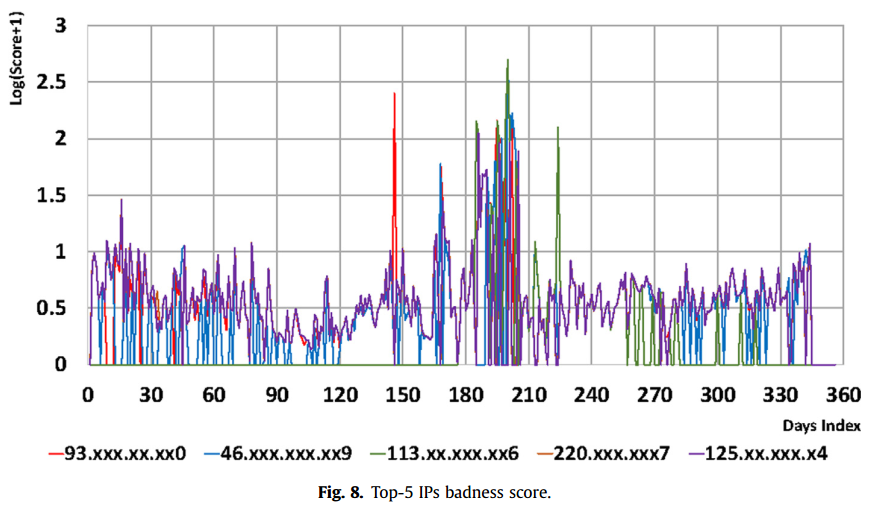
前5个领域和连接ip的坏分数的演变,域名具有周期性,IP更分散。
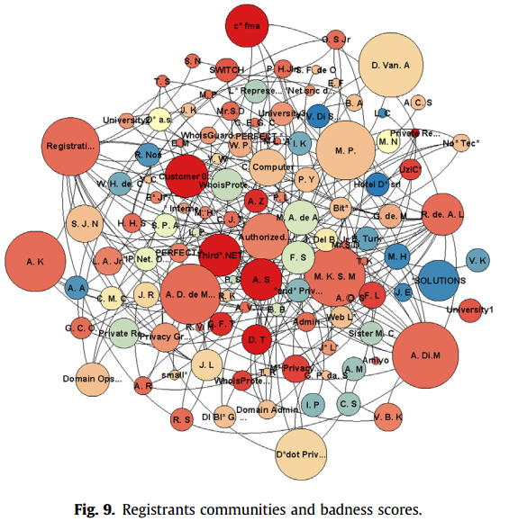
圈越大，分越高。
Patterns inference
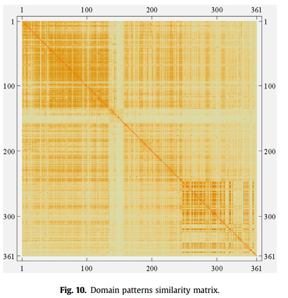
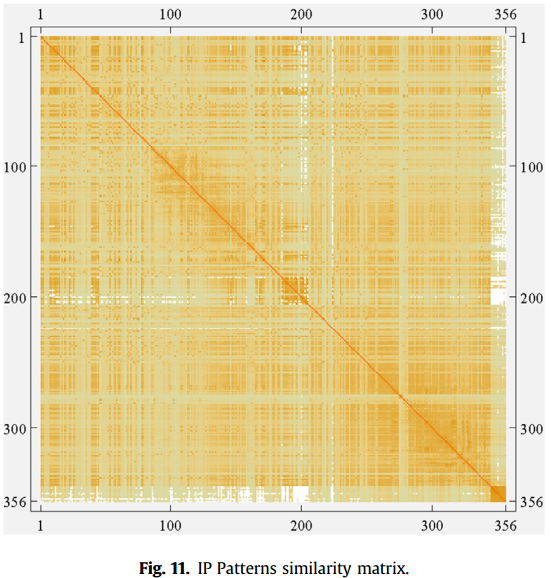
分析
通过这两个图可以发现，域名的相似性更具有周期性。
而IP的周期性很短，1-60天。
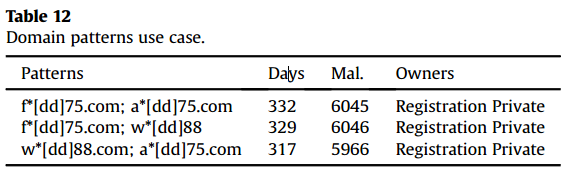
域名的模式：2个字母+2个数字。
分析这些域名下存在大量的恶意软件，并且这些域名的拥有着都有隐私保护，美国一些有这种服务的域名公司很可疑。
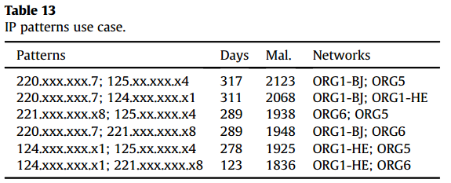
恶意软件连接IP的模式。
分析这些IP5个属于中国。中国有一个IP模式集群，协作恶意软件活动。
0x05总结与贡献
- 定义了网络威胁基础设施的不同元素及其关系，提出了研究这些关系的方法。
- 确定了这些元素中的重要参与者。
- 找到了不同恶意软件共享的基础设施。
- 找到了基础设施的演变模式。